Manual
CORTEX (1.5.5; until 1.4.7 called AMB-1 FM6) turns the M-VAVE FM-1 into a generative ambient machine, inspired by Brian Eno's Music for Airports. It plays itself from the moment it's switched on: three FM voices (each breathing chords, ringing loops or gliding a bass, as you choose), a short echo, a tape loop and a plate reverb, and a reel of tape that records it all and plays it back as grains. You don't perform it, you tend it: pick a piece and a scale, take notes out, put them back, and let it grow.
It is an unofficial fork of Charles Vestal's AMB-1: the same garden, with DX7-style FM voices (their patches edited operator by operator, your own DX7 banks), three voices alike, the dice and the reel; and since 1.4.8 songs from MIDI files, a video synth on the first page whose colours run through every page, and the reel recording what you play.
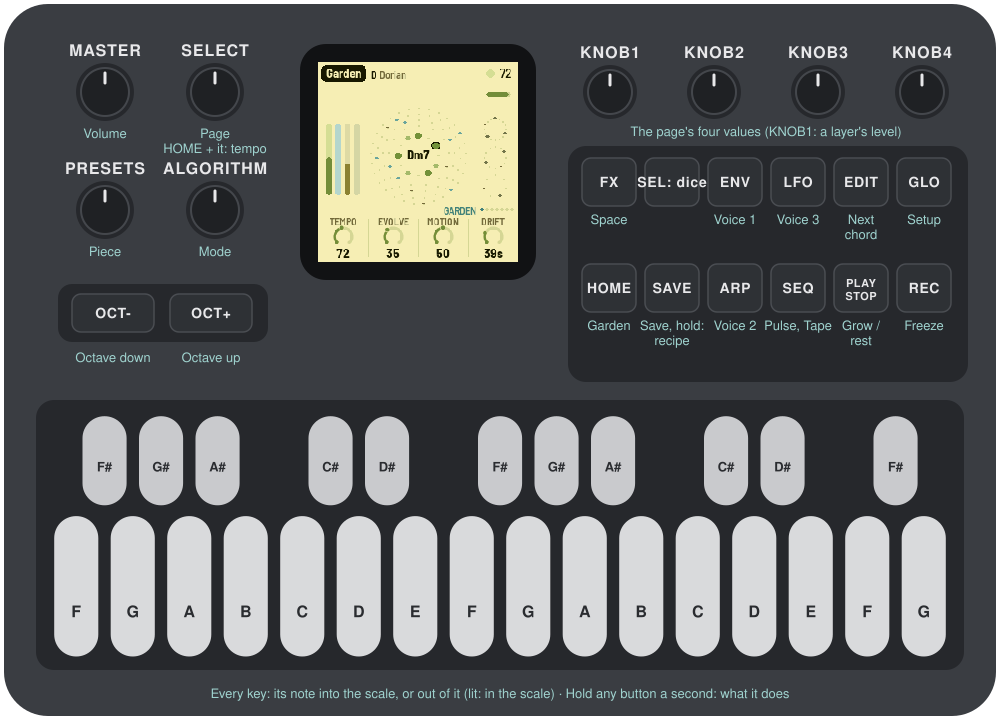
1Install
This is AMB-1 FM6, its own package (identity FM-1_76…), not the one on AMB-1's site. It installs over M-VAVE's firmware V15 (or over an earlier AMB-1 FM6).
Install, one click: connect the FM-1 with a USB data cable straight to the computer, open amb1-fm6.netlify.app (or INSTALAR.html from the package's folder) in Chrome or Edge, press Install and allow MIDI when the browser asks. Don't unplug it while it's writing; the FM-1 restarts into AMB-1 FM6 by itself. An FM-1 on M-VAVE's Open firmware gets V15 first, on the same click. A V16 has to go back to V15 first with M-VAVE's updater, M-UPGRADE, and the V15 file (linked at the top of the page, and firmware-original-M-VAVE/FM-1_V15.fwsc in the package's folder).
Install from a terminal: with Python 3 and its MIDI modules (pip install mido python-rtmidi; on Windows the Visual C++ runtime too), from the package's folder:
python fm1_install.py amb-1.4.7-fm6.fwscIt checks the identity the FM-1 reports at the end (FM-1_76010407). python fm1_install.py --info shows what an FM-1 runs.
Go back: the installer's page has "Back to the stock firmware" at the bottom, M-VAVE's V15 inside it: one click. It erases everything AMB-1 FM6 kept on the FM-1: the pieces, the recorded reel and the DX7 banks you sent (the built-in ones come back when AMB-1 FM6 is installed again). M-VAVE's M-UPGRADE works too.
Installing other firmware is at your own risk. If the FM-1 ever won't start, see Recovering an FM-1 that won't start.
2Getting started
AMB-1 FM6 starts playing as soon as it's on. A few minutes with it:
- Listen. The first piece, Garden, is playing: D Dorian, a chord breathing (Voice 1), bells on loops (Voice 2) and a bass (Voice 3). Turn MASTER for the volume.
- Try another piece. Turn PRESETS. Each of the eight pieces has its own key, tempo, sounds and movement.
- Change the scale. Press a key whose note is lit: it leaves the scale. Press it again to bring it back. Any key that isn't lit adds its note.
- Move on. Press EDIT: the chord moves on at the start of the next bar.
- Freeze. Press REC: the chord holds and the reverb rings on, while the rest goes on above it. REC again lets it go.
- Shape a voice. ENV, ARP and LFO are Voices 1, 2 and 3: Level, Role, Octave, Density. Press the button again for the voice's patch, its operators and its modulators.
- Roll the dice. Press SEL: the page shown gets new values, in ranges that keep it music. Hold SEL a second to undo. SEL + SAVE puts the page's part back to its defaults (undone the same way).
- Record. SEQ opens the Tape page; EDIT records, REC stops, and the reel plays it back.
- Rest. Press PLAY: the garden stops growing and its sounds fade out slowly. PLAY again and it grows back.
What you change is kept with the piece. It saves by itself while resting, or press SAVE.
Not sure what a button does? Hold it for a second: a card says. Let go and nothing happens.
3Controls
| Control | What it does |
|---|---|
| Keys | The scale. Each key adds its note to the scale or takes it out; the keys light up for the notes in it. Every octave of a note is the same key. The root stays, and the scale keeps at least three notes. |
| PLAY | Grow / rest. At rest, the sounds fade out slowly and the reverb rings away. Lit green while growing. |
| REC | Freeze: the chord holds and the reverb rings on. Again: thaw. On the reel's pages: record (see The reel). |
| EDIT | The next chord, at the start of the next bar. On the reel's pages: a new splice. |
| HOME | The Partiture page (the score). |
| ENV · ARP · LFO | Voices 1, 2 and 3. Again: the voice's PATCH, OPERATOR and MOD pages, then back. |
| SEQ | The reel: Tape. Again: Gene, Deck, Tape Mod, Tape Mod 2, Tape Key, and round. |
| FX · GLO | The Space and Setup pages. |
| SEL | The dice. Tapped: every knob of the page shown rolled (on an operator page all six operators, on a MOD or Tape Mod page all five modulators, two to four of them on, the rest Off). Held with ENV, ARP, LFO, HOME, SEQ, FX or GLO: that whole layer (with HOME and SEQ, the loops and patterns grown anew too). With EDIT: new loops, the settings kept. With SAVE: init (see below). Held alone a second: undo the last roll, init or recipe. |
| SELECT | The previous or next page. Hold HOME and turn it for the tempo. |
| ALGORITHM | Mode: Ionian, Dorian, Phrygian, Lydian, Mixolydian, Aeolian, pentatonic major and minor. Editing the scale with the keys makes it Custom. |
| PRESETS | The piece (see The pieces). |
| KNOB 1–4 | The four values on the screen. A few clicks are single steps; a quick turn speeds up. |
| OCT− / OCT+ | The octave of the voice shown (Voice 1 on the other pages), two down to two up. |
| MASTER | Volume. |
| SAVE | Saves all eight pieces (on the reel's pages, the reel too). Held 1.5 s: the piece back to its recipe (SEL held undoes it). |
Init: SEL + SAVE puts what the page is part of back to its defaults: on a voice's MOD pages its five modulators; on its other pages how it plays (Envelope to the ADSR, its role kept), its Index and modulators (its patch kept); on the reel's pages its settings and modulators (its source kept); on the others every modulator of the piece. Undo: hold SEL a second: the last roll, init or return to the recipe is undone.
Help: hold any button but PLAY for a second and a card says what it does. A key, a knob or another button puts it away; letting go after it does nothing else.
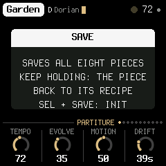
4The screen
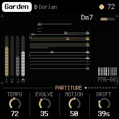
- Top line: the piece, its root and mode (and a terminal's cursor, blinking), as far as they fit. On the right, a slow beat light, the tempo (EXT when it follows MIDI clock) and a dot when there are unsaved changes. Messages ("ADDED F#", "VOICE 2 / PATCH") show here for a moment.
- Top right: a thin bar fills up on the way to the next chord; while frozen it says "held".
- The score (Partiture, Space and Setup): a grand staff, G and F clefs, scrolling right to left, about seven seconds of it. Each note any voice plays stands at its pitch (a small cross for a sharp, ledger lines past the staves), in its voice's colour; while it sounds it is lit on the reading line, on the right, with a trail back to where it began. The chord's name is above the line.
- The voices' pages: each voice's own sound on an oscilloscope (see the voices).
- Left: the levels as they sound, in dB: each voice's own (1, 2, 3) and the mix (M), before the volume.
- The look: each page in the colours of a record of Aphex Twin's, drawn anew (no names, no marks): the Partiture black and white with a few gold details, Voice 1 rust and gold, Voice 2 warm orange on black, Voice 3 green, Space a blue sky, Setup steel grey and a warning yellow (and a live hex dump of the settings), the reel's pages beige paper and the circles of Volume II's back. Registration marks at the corners. Since 1.5.2 the chord that sounds colours every page: its first three notes give three colours (C red round the colour wheel to B), as bright as the voices are loud, which fill the lines, the knobs' rings and a faint wash of slow bands over the ground. The letters are melted (1.5.1): each column on a slow wave, a drop now and then from a stroke's foot, a ghost of the letter a pixel off in another colour.
- The battery (top right, 1.5.5): three bars, rust at one or none; a bolt when a computer powers the FM-1.
- Bottom: the page's name and a dot for each of the eleven pages, then its four values, one for each knob: a dial (or, for a switch, its positions) and the value. The one you're turning lights up.
On the reel's pages the score gives way to the reel (see The reel).
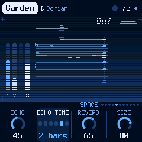
5The garden
AMB-1 FM6 grows its voices from one scale and one chord. Each of the three voices plays its own FM patch (six operators, as a DX7) in one of three roles, and any voice can take any role:
- Chord: up to four breathing notes. Each swells in, hangs and fades on its own cycle (unequal lengths, as in the tape loops of "2/1"), taking its note of the chord as it starts, so the chord forms and dissolves instead of sitting there. Every so often (Drift) the chord moves to another one in the scale; notes the new chord shares hold to the end of their breath, the others fade and breathe in again on their new notes.
- Loops: four tape loops 13, 17, 23 and 29 steps long. Each holds a few notes, so the loops slide against each other and the melody never quite repeats. Each loop is its own shade of the patch, and now and then a note rings with its octave.
- Bass: the chord's root, low and soft, gliding; sometimes it leans on the fifth.
By default Voice 1 is a chord, Voice 2 the loops and Voice 3 the bass, as AMB-1's pad, bells and bass were.
Then the space, after Eno's chain for Discreet Music: a short tape echo, a tape loop (up to 2.8 seconds, two heads, each repeat darker and thinner) and a plate reverb. With Motion up, the echo's heads wander across the field and now and then the second slides to another part of the loop.
Over it all:
- The arc: a slow tide, a few minutes from end to end, between sparse (fewer notes, darker, quieter pulse, more reverb) and full. Motion sets how far it swings, and how far pitch, pan and the echo's heads wander.
- Rests: with Evolve up, the voices take breaths: a bass skips a chord, a loop goes quiet for a pass.
6The pieces
PRESETS chooses one of eight pieces, each a recipe for the whole garden: the voices and their sounds, tempo, key and mode, how busy and how changeable, and a modulation of its own (each voice's second modulator, the reel's first). Each remembers how you left it. Hold SAVE 1.5 s to put the piece back to its recipe. Tune, MIDI out and Lights are the same for all.
| Piece | What it is |
|---|---|
| Garden | D Dorian, 72: everything, gently. Rhodes. |
| Departures | C# Ionian, 60: soft bells an octave down over a quiet Rhodes, as "1/1". |
| Voices | F Aeolian, 56: only sung voices and a low bass, as "2/1". |
| Afternoon | G Lydian, 84: a bright Rhodes, busier bells. |
| Night Bus | A Aeolian, 96: metallic bells, short echoes, chaotic modulation. |
| Shoreline | E pentatonic major, 64: dark, round bells lost in long echoes, as "2/2". |
| Glass | Eb pentatonic minor, 76: clangy bells an octave up, dense. |
| Tides | Bb Mixolydian, 70: sung voices, the most changeable. |
7The pages
A page on each button, four values on KNOB 1–4; SELECT steps through them: Partiture, Voice 1, 2, 3, Space, Setup, Tape, Gene, Deck, Tape Mod, Tape Mod 2. Each voice has more pages of its own (ENV, ARP or LFO again).
HOME: Partiture
- Tempo: 30 to 120 (also HOME + SELECT, from any page).
- Evolve: how restless the garden is. At 0 the loops repeat exactly; turned up, notes change or move at the end of a pass, the pulse patterns turn, and the voices take rests.
- Motion: how far the arc swings, and how much pitch, pan and the echo wander.
- Drift: how long a chord lasts before it moves on, 20 seconds to 5 minutes. EDIT moves on now.
ENV · ARP · LFO: Voices 1, 2, 3
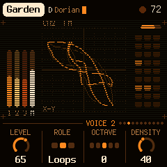
Each voice's pages show its own sound on an oscilloscope, caught as it rises through zero and scaled to its peak, on a graticule, the last trace fading as on a phosphor screen: Voice 1 in time (Y-T), Voice 2 against itself a quarter later (X-Y, a Lissajous), Voice 3 wound round a circle (polar).
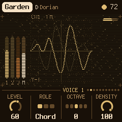
The three alike:
- Level.
- Role: Chord, Loops or Bass (see The garden). Changing it fades the voice out and in.
- Octave: two down to two up (OCT− and OCT+ too).
- Density: a chord's notes (1 to 4); the loops' notes (none to five a loop); how often the bass leans on the fifth.
FX: Space
- Echo: how much goes to the echoes.
- Echo time: the tape loop's length: a dotted quarter, a half, a dotted half, 1, 2 or 4 bars, shortened to fit its 2.8 seconds at slow tempos. The second head repeats at three quarters of it (with Motion, at other parts).
- Reverb: how much goes to the plate.
- Size: how long the plate rings, from a room to a long hall, and how many times the echo comes back.
GLO: Setup
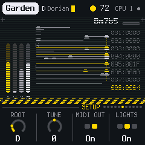
- Root: the key's root note.
- Tune: fine tuning, ±50 cents.
- MIDI out: on or off.
- Lights: On: the keys light the scale and the unlit buttons glow dimly. Keys: the key lights only. Off.
The top right of this page shows how much of the FM-1's time the sound takes (CPU) and, after an X, how many times since it started the sound ran out of time (an overload: see Troubleshooting).
HOME again: the video synth
HOME on the Partiture opens the video synth's pages; HOME again steps through them, from Screen back to the Partiture. The picture moves with the music (its levels, its beats, the voices, the notes). The keys play it on these pages.
| Page | KNOB 1 | KNOB 2 | KNOB 3 | KNOB 4 |
|---|---|---|---|---|
| Visual | Visual (Bloom, Ridge, Prism, Swarm, Tunnel, Plasma, Spiral, XOR, Score) | Colour (Theme, Ember, Ice, Acid, Mono) | Trails | React |
| Video | Feedback | RGB | Hue | Sync (a bass hit tears rows) |
| Shape | Geometry (Off, Polygon, Lissajous, Grid, Mandala, Scope, Rutt) | Sides | Mirror (Off, Mirror, Flip, Quad, Kaleido) | Speed |
| Mix | Layer (a second picture, or Off) | Blend (Add, Screen, Max, Diff, Mask) | Mix | Pulse |
| Life | Morph | Mutate | Flow | Chaos |
| Mosh | Mosh | Sort | Corrupt | Slice |
| Chroma | Colorama | Poster | Pixel | Key |
| React | Slot (1–4) | Source (Level, Bass, Mid, High, Beat, Voice 1–3, Notes, Chord, LFO, Random) | Target (any of these pages' settings, or All) | Depth |
| Screen | Bars (Show, Auto, Hide: the page's name and knobs over the picture) | Delay | Bright | Ear |
GLO again: MIDI and Song
GLO on Setup opens MIDI, then Song, then back to Setup.
- MIDI: V1 chan, V2 chan, V3 chan: each voice's MIDI channel, out and in; Notes in: Scale, a note on Voice 1's channel adds or removes its note from the scale; Play, a note on a voice's channel plays that voice. The top line counts what comes in on each port (U for USB, J for the jack, B for Bluetooth) and the last note's channel.
- Song: a song from a MIDI file (see MIDI) plays through the garden: Song picks it (Off, or slot 1–4), Follow how closely the voices follow its melody and bass (from 50 up, more and more), Vary leaves notes out, a scale step off or a sixteenth late, now and then; Start the bar it starts from. Its chords lead the garden's while it plays, moved to the garden's root.
ENV, ARP or LFO again: a voice's own pages
Each voice's patch is a DX7 voice of six operators, edited as a DX7 edits it, with five generative modulators. Its pages come in three groups: press the voice's button again for PATCH, again for OPERATOR, again for MOD, and once more to come back. SELECT steps through the group's pages; each group comes back on the page it was left on. The top of the screen says which voice and which page. Each piece keeps all of it.
PATCH
| Page | KNOB 1 | KNOB 2 | KNOB 3 | KNOB 4 |
|---|---|---|---|---|
| Patch | Patch | Algorithm (1–32) | Feedback (0–7) | Index (±24 dB on the modulators) |
| Play | Envelope (AMB, Patch, ADSR) | Gate (5–100 %) | Pace | Glide |
| ADSR | Attack | Decay | Sustain | Release |
| LFO | Speed | Delay | Pitch mod | Amp mod |
| LFO 2 | Wave | Pitch sens | Key sync | Transpose (±24 semitones, as a DX7 plays it) |
| Pitch EG | Stage (1–4) | Rate | Level (±50) | Osc sync |
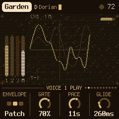
- Patch: AMB-1 FM6's own eighteen first (pads: Rhodes, Voices, Glass, Strings, Warm, Halo; bells: Bell, shaped by the piece's tone, Vibes, Marimba, Tubular, Kalimba, Celesta; basses: Sine, Round, Pick, Sub, Reed, Fretless), any voice any of them, then the voices of the DX7 banks you sent (see MIDI), by name. Turning it loads the patch as it is; any edit makes it the piece's own, shown with a
("E.PIANO 1"). - Envelope: how the notes are shaped. AMB: AMB-1's own (a chord breathes, the loops let a held note go after a beat, the bass is one note held and faded in). Patch (the default): each note struck and let go after Gate, so the patch's own envelopes are heard, and editing them changes the sound. ADSR: the same, the carriers' envelope from the four ADSR knobs (the modulators keep the patch's).
- Gate: how long a note is held down: of a chord's breath, of a bar for the loops, of a chord (or a step) for the bass.
- Pace: a chord's breath (4 to 16 s); the loops' step (1/16, 1/8, 1/4, 1/2); the bass struck each chord, or each bar, 1/2, 1/4, 1/8 (with Patch or ADSR).
- Glide: how slowly the bass slides to its next note, 20 ms to 1.2 s.
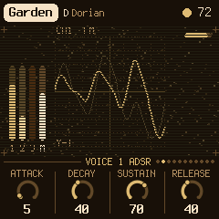
OPERATOR (KNOB 1 picks the operator, OP1–OP6, on every page of the group)
| Page | KNOB 2 | KNOB 3 | KNOB 4 |
|---|---|---|---|
| OP | Ratio (×0.50 .. ×31; fixed mode: Hz) | Fine | Level |
| OP Env | Stage (1–4) | Rate | Level |
| OP 2 | Mode (Ratio, Fixed) | Detune (±7) | Velocity |
| OP 3 | Break (a note) | L depth | R depth |
| OP 4 | L curve | R curve | Rate scale |
| OP 5 | Amp sens |
Ratio and Fine show the operator's frequency together ("x1.50"); in fixed mode it is in Hz. Edits are heard at once on the notes sounding.
MOD (KNOB 1 picks the modulator, 1–5, on every page of the group)
| Page | KNOB 2 | KNOB 3 | KNOB 4 |
|---|---|---|---|
| Mod | Target | Depth | Rate |
| Mod 2 | Shape | Sync | Smooth |
| Mod 3 | Spread | Fade |
Each of a voice's four notes has a generator of its own in each modulator, each at its own pace around Rate; the five are summed; the arc deepens them when the garden is full and calms them when sparse.
- Depth: how far it goes. 0: nothing.
- Rate: a cycle from 60 seconds to an eighth of a second. With Sync at Tempo: a note value, 8 bars to 1/16.
- Shape: Sine, Triangle, Saw up, Saw down, Square; S&H (a random value a cycle, held); Walk (gliding between random values); Chaos (the logistic map, jumping); Env (from each note's start, falling to nothing over a cycle).
- Target: Off (the default: the modulator does nothing), or the voice's: Timbre (the modulators' level, ±12 dB), Ratio (harmonic steps, ×1 to ×5), Metal (the modulators out of tune with each other), Feedback, Decay (each new note's envelopes), Pitch (±30 cents), Space (the stereo field), All, Level (a tremolo, to −10 dB), LFO PM (the patch's vibrato, deeper). And any operator's own, OP1..OP6: Level, Ratio, Fine, Atk, Dec, Sus, Rel. And the voice's own modulators: M1..M5 depth (±50) or rate (±2 octaves): one modulator moving another.
- Spread: 100: each note its own way. 0: the voice's notes move as one.
- Fade: the modulation coming in after each note, at once (Off) to 8 seconds.
- Sync: Free; Note (each note starts the shape again); Tempo (Rate a note value).
- Smooth: a glide on the shape, 2 ms to half a second.
8The reel
A track of tape, 11.8 seconds, mono, after a TASCAM portastudio's tape and Make Noise's Morphagene's genes (the idea, not their code). SEQ opens Tape; again Gene, Deck, Tape Mod, Tape Mod 2, and round.
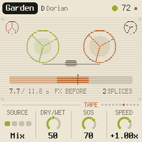
On these pages the screen shows the reel: a cassette whose spools wind and turn at Speed, the reel as a strip (its splices, the one playing bright, the cursor, each gene where it reads, the record head), the seconds recorded and the splices.
| Page | KNOB 1 | KNOB 2 | KNOB 3 | KNOB 4 |
|---|---|---|---|---|
| Tape | Source (Mix, Voice 1, 2, 3, File, USB, Play 1, 2, 3, Play All) | Dry/Wet | SOS | Speed (−2x .. Stop .. +2x) |
| Gene | Gene (the whole splice .. 1/256) | Slide | Morph | Organize (splice 1–8) |
| Deck | FX (Before, After) | Wow | Drive | Tone |
| Tape Mod | Mod (1–5) | Target | Depth | Rate |
| Tape Mod 2 | Mod (1–5) | Shape | Sync | Smooth |
| Tape Key | Key sync (Off, Cortex, Tape) | Key (the splice picked's) | Shift (the reel transposed) |
Recording (on these three pages):
- EDIT records a new splice at the end of the reel (up to 8). EDIT again while recording ends it and starts the next at once; REC stops.
- REC overdubs the splice Organize picks, round and round, sound on sound (SOS: how much of what was there stays; 0 replaces it). REC again stops.
- SAVE keeps the pieces and the reel; the screen shows how far it has gone, and the reel comes back after a restart. REC held 1.5 s erases the reel (save after, to erase the saved one too).
- A splice can't be erased alone: overdub it at SOS 0, or erase the reel.
What it records is Source's: the whole mix (the reel itself left out) or one voice alone, a little saturated as onto tape (Drive); File, a reel sent from a computer (tools/FITA.html); USB, what a computer or a phone plays into the FM-1 over USB; Play 1, 2, 3: on the reel's pages the keys play that voice (Play All: all three) and the reel records what you play.
How it plays: the splice Organize picks, as genes: each a window of the splice (Gene), starting where the tape is, past it by Slide, at Speed (pitch and time together, as tape; 1x and −1x stick; at Stop it falls silent), with Wow and flutter. Morph: gaps between the genes (0–40), one after another (40–55), two to four overlapping (55–100), spread across the field (past 75), an octave up or down now and then (past 85). Tone darkens it (1.5 kHz to open).
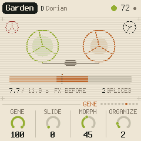
Dry/Wet: the garden against the reel: Dry, the garden alone; 50, both full; Wet, the reel alone (the garden is still recorded, unheard, as a send).
FX sets where the space (echo and reverb) is: Before the reel, the garden goes through it and the reel records it with its space and plays dry beside it; After the reel, it records the garden dry and plays through the space, as the garden does.
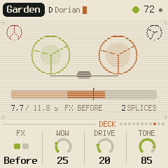
Tape Mod: five modulators of the reel's settings, as a voice's MOD (KNOB 1 picks one, on both pages): Target (Off, the default; Speed, Gene, Slide, Morph, Dry/Wet, Tone, Wow, Drive, SOS, Organize; or another modulator's depth or rate, M1..M5), Depth (of the setting's range, half either way at 100: at 100 on Speed, −2x to +2x; on a modulator's depth ±50, on its rate ±2 octaves), Rate (60 s to an eighth of a second a cycle; with Sync at Tempo a note value), Shape (Sine, Triangle, Saw up, Saw down, Square, S&H, Walk, Chaos), Sync (Free, Tempo), Smooth (a glide, 2 to 500 ms). They move the setting while the reel plays (and records: Drive, SOS); the knob stays where you put it. Each piece has its own first one.
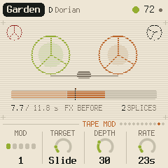
9MIDI
MIDI comes in over USB and the TRS jack, and goes out over USB.
- In, notes: on Voice 1's channel a note adds or removes its note from the scale, like a key; with Notes in at Play, a voice's channel plays the voice (the MIDI page, GLO twice).
- In, clock: the beat follows MIDI clock, and start / stop start and stop the garden. The screen shows EXT for the tempo. What hangs on the tempo follows it too, measured a beat at a time: the echo, the modulators at Sync Tempo, the loops' Gate, the swing.
- Out (on by default): Voices 1, 2 and 3 on their channels (1, 2 and 3 unless the MIDI page says otherwise), and clock with start / stop when it runs on its own tempo. Turning MIDI out off sends all notes off.
Songs from MIDI files
A MIDI file becomes a song in one of four slots: its chords a half bar each, its melody and its bass (drums on channel 10 left out), its key found from its notes. On a computer, python3 tools/amb_mid.py song.mid --song 1 sends it to slot 1 over USB; in the browser simulator the page does the same for the simulated FM-1. Then the Song page (GLO twice) plays it.
CC and NRPN, in and out
What the knobs set comes and goes as MIDI CC (out with MIDI out on; what comes in is not sent back):
| Channel | CC | What |
|---|---|---|
| 16 | 20–49 | the parameters 0–29 (the layers, the space, setup; a patch source as its number) |
| 16 | 50–61 | the reel: Source, Dry/Wet, SOS, Speed, Gene, Slide, Morph, Organize, FX, Wow, Drive, Tone |
| 16 | 62–91 | the reel's five modulators: Target, Depth, Rate, Shape, Sync, Smooth of the first, then the next's |
| 1, 2, 3 (the voices) | 20 | the voice's Index |
| 1, 2, 3 | 21–60 | its five modulators, eight each: Depth, Rate, Shape, Target, Spread, Fade, Sync, Smooth |
| 1, 2, 3 | 102–112 | how it plays: Envelope, Gate, Role, Octave, Density, Pace, Glide, Attack, Decay, Sustain, Release |
| 1, 2, 3 | NRPN: 99 = 0/1, 98 = 0..127, 6 = value | its patch, byte by byte (the DX7's VCED order, 0..154) |
A value is scaled to its range. The patch's bytes go as they are.
DX7 voices and banks from a computer
The firmware comes with 16 DX7 banks built in (the DX7's ROM 1A to 4B, and bells, mallets, rhodes, strings, synths, woodwind, effects and piano banks), in the Patch knob of every voice after the eighteen. A bank you send takes the place of the built-in one; erasing it brings the built-in one back. amb_syx.py sends them over USB (Python with mido and python-rtmidi; close other programs using the FM-1's MIDI port first):
python amb_syx.py ROM1A.syx --bank 1 # a 32-voice bank into bank 1 (of 16)
python amb_syx.py EPIANO.syx # a single voice into the voice whose pages are shown
python amb_syx.py --info # how many voices each bank holds
python amb_syx.py --erase 1A bank can be a DX7 bulk dump (4104 bytes), 4096 bytes of packed voices, or up to 32 single voices in one file; values past the DX7's ranges (common in old banks) are held to them. The screen says BANK n and how many voices came. A single voice from a DX7 editor (Dexed's Send) goes straight into the voice whose pages are shown. The banks (16 of 32 voices) stay in the FM-1's memory apart from the pieces; a piece keeps a copy of each voice it plays, so sending another bank later never changes it.
Screen reader
AMB-1 can tell a screen reader what its screen shows: connect the FM-1 by USB, open the FM-1 Screen Reader in Chrome or Edge, and click Connect. It reads out the page, its knobs, a knob's value as you turn it, the piece and its key, help cards, messages and each chord. Press W to hear the whole screen again.
10Saving
AMB-1 FM6 keeps all eight pieces in the FM-1's memory, each as you left it: the knobs, the scale, the tempo, each voice's patch and settings, plus Tune, MIDI out and Lights.
- By itself: a few seconds after a change, but only while resting (writing to the memory interrupts the sound for a moment). A dot at the top of the screen means there are unsaved changes.
- SAVE: saves now. On the reel's pages, the reel too.
- Hold SAVE 1.5 s: the piece goes back to its recipe (not saved until the next save).
- The pieces of earlier versions load as they were, each voice in the role its layer had.
11Troubleshooting
Clicks with everything going: the sound takes most of the FM-1's time with three voices busy, the modulators on and the reel playing many genes (CPU on the Setup page, top right). Fewer overlapping genes (Morph lower), fewer modulators or a lower Density help. (1.4.0 made room: no pulse, the plate and the genes at 22 kHz.) When the sound runs out of time for a moment (an overload, counted after X on the Setup page), AMB-1 FM6 lets go of what is heard least, a gene of the reel, else the softest bell ringing, rather than the sound sticking on its last moment.
The sound stuck, repeating, the lights blinking: don't switch it off; wait ten seconds (it restarts by itself and keeps a record of it), then read the record: the installer's page, "Read the crash report".
Update mode: hold OCT- and OCT+ together for five seconds. A countdown appears; let go before it ends to cancel.
Calibration: if a button or knob does the wrong thing, hold OCT- and OCT+ while you switch the FM-1 on. The screen then asks you to press each button and turn each knob in turn.
After a crash: a red CRASH screen, and it restarts by itself a few seconds later. The next start shows RESTARTED AFTER A CRASH and an address (PC ...) for a moment: note it, and what you were doing.
Safe mode: if it crashes twice in a row while starting, it starts in SAFE MODE instead: no sound, but USB works, so the installer can reach it: install again, or put the stock firmware back. Press PLAY to try starting normally. If even safe mode fails twice, the FM-1 drops into the chip's own update mode, and only the rescue below reaches it.
Recovering an FM-1 that won't start
An FM-1 in the chip's own update mode shows a blank screen, and neither the installers nor M-VAVE's updater can see it. A script can put M-VAVE's firmware back, on a Mac, with the USB cable you already have. Open Terminal, paste this line and press Return:
bash -c "$(curl -fsSL https://raw.githubusercontent.com/hugelton/felucca-bsp/main/tools/fm1_rescue.sh)"- If a window asks to install the command line developer tools, click Install, then paste the line again.
- If it asks for a password, type your Mac password (nothing shows) and press Return.
- When it says it's waiting, plug the FM-1 in and switch it on. The script catches it, checks the chip, saves a backup of the FM-1's memory in the
fm1-rescuefolder in your home folder, and asks before it writes anything. - Type yes and press Return. Don't unplug anything until it says it's restarting the FM-1. It then starts into its original firmware, and you can install AMB-1 FM6 again.
The script downloads M-VAVE's FM-1 V15 firmware and JieLi's flash loader and checks both against known fingerprints. It writes only the firmware area, never the bootloader or the FM-1's own settings. If the FM-1 never shows up at all, Felucca's FM-1-transporter can still reach it.
12Parameters
The defaults are Garden's; each piece has its own.
| Page | Value | Range | Garden |
|---|---|---|---|
| Garden | Tempo | 30–120 | 72 |
| Garden | Evolve | 0–100 | 35 |
| Garden | Motion | 0–100 | 50 |
| Garden | Drift | 20 s – 5:00 | 25 (about 40 s) |
| Voice 1, 2, 3 | Level | 0–100 | 60, 65, 45 |
| Voice 1, 2, 3 | Role | Chord, Loops, Bass | Chord, Loops, Bass |
| Voice 1, 2, 3 | Octave | −2 – +2 | 0 |
| Voice 1, 2, 3 | Density | 0–100 | 100, 40, 35 |
| Space | Echo | 0–100 | 45 |
| Space | Echo time | 1/4., 1/2, 1/2., 1 bar, 2 bars, 4 bars | 1 bar |
| Space | Reverb | 0–100 | 65 |
| Space | Size | 0–100 | 80 |
| Setup | Root | C – B | D |
| Setup | Tune | −50 – +50 cents | 0 |
| Setup | MIDI out | Off, On | On |
| Setup | Lights | Off, On, Keys | On |
| Tape | Source | Mix, Voice 1, 2, 3 | Mix |
| Tape | Dry/Wet | 0–100 | 50 |
| Tape | SOS | 0–100 | 70 |
| Tape | Speed | −2x .. Stop .. +2x | +1x |
| Gene | Gene, Slide, Morph | 0–100 | 100, 0, 45 |
| Gene | Organize | 1–8 | 1 |
| Deck | FX | Before, After | Before |
| Deck | Wow, Drive, Tone | 0–100 | 25, 20, 85 |
| Tape Mod (×5) | Target | Off, Speed, Gene, Slide, Morph, Dry/Wet, Tone, Wow, Drive, SOS, Organize, M1–M5 depth, M1–M5 rate | the first the piece's (Slide in Garden), the rest Off |
| Tape Mod (×5) | Depth, Rate, Shape | 0–100, 60 s – 0.12 s (Tempo: 8 bars – 1/16), the MOD's shapes | 30 (the first, Garden), 0 |
| Tape Mod (×5) | Sync, Smooth | Free, Tempo; 2–500 ms | Free, 2 ms |
| A voice's PATCH | Patch | the eighteen, then the banks' voices | Rhodes, Bell, Sine |
| A voice's PATCH | Algorithm, Feedback, LFO, Pitch EG, Transpose | as a DX7 | as the patch |
| A voice's PATCH | Index | −24 – +24 dB | 0 dB |
| A voice's Play | Envelope | AMB, Patch, ADSR | Patch |
| A voice's Play | Gate | 5–100 % | 70 %, 25 %, 80 % |
| A voice's Play | Pace | 0–100 | 60, 60 (1/4), 0 (each chord) |
| A voice's Play | Glide | 20 ms – 1.2 s | 260 ms |
| A voice's ADSR | Attack, Decay, Sustain, Release | 0–100 | 5, 40, 70, 40 |
| A voice's OPERATOR | Ratio, Fine, Level, Envelope, Mode, Detune, Velocity, Break, Depths, Curves, Rate scale, Amp sens | as a DX7 | as the patch |
| A voice's MOD (×5) | Depth | 0–100 | 20 (the first), 0 |
| A voice's MOD (×5) | Rate | 0–100 (60 s – 0.12 s; Tempo: 8 bars – 1/16) | 27 (11 s) |
| A voice's MOD (×5) | Shape | Sine, Triangle, Saw up, Saw down, Square, S&H, Walk, Chaos, Env | Sine |
| A voice's MOD (×5) | Target | Off, the voice's ten, each operator's seven, M1–M5 depth and rate | the first two the piece's, the rest Off |
| A voice's MOD (×5) | Spread, Fade, Sync, Smooth | 0–100, Off – 8 s, Free/Note/Tempo, 2–500 ms | 100, Off, Free, 2 ms |
| ALGORITHM | Mode | 8 modes, or Custom | Dorian |
13Credits
AMB-1 FM6 is free software under the Mozilla Public License 2.0: if you share it changed, share the changed files' source too. Its source comes with it (codigo-fonte/), with LICENSING.md.
- AMB-1, the garden, its pieces and its screen: Charles Vestal. AMB-1 FM6 is an unofficial fork, not connected with him.
- The idea comes from Brian Eno's generative music: Music for Airports' tape loops of unequal length, and the echo and tape-delay chain of Discreet Music.
- The FM voices: msfa, the DX7 core of Dexed (Google Inc., Pascal Gauthier), Apache-2.0, as ported to integer C by Leo Kuroshita and carried in Juan Ignacio Antonucci's JIANT FM.
- The reel's genes follow the idea of Make Noise's Morphagene, its tape a TASCAM portastudio's; no code of theirs. Its coding is IMA ADPCM.
- The reverb is Jon Dattorro's plate ("Effect Design, Part 1", JAES 1997), by way of FoMni-1. The Euclidean rhythms are Godfried Toussaint's reading of Bjorklund's algorithm.
- The platform is fm1-base and felucca-bsp, from Felucca by Leo Kuroshita, Hügelton Instruments.
- The font is Terminus (SIL Open Font License).
- The built-in DX7 banks come from Dave Benson's DX7 archive; the DX7's voices are Yamaha's (see
LICENSING.md). - The pages' looks are after the records of Aphex Twin (their colours and feel, drawn anew; no names or marks).
M-VAVE, FM-1, Yamaha, DX7, Make Noise, Morphagene and TASCAM are trademarks of their owners. AMB-1 FM6 is not connected with any of them, with Brian Eno or with Hügelton Instruments.